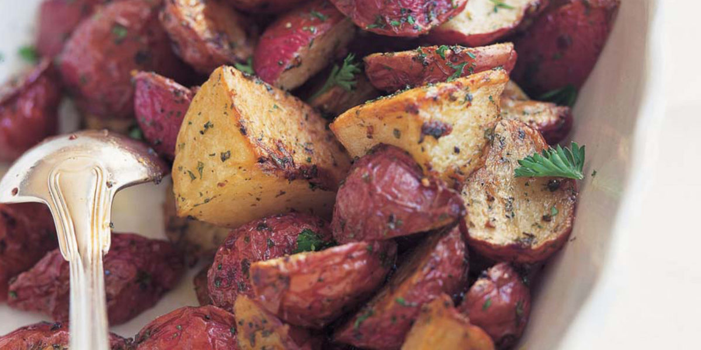

Ina Garten's Garlic Roasted Potatoes
Ingredients
- 3 pounds small red or white potatoes
- 1/4 cup GOOD olive oil
- 1 1/2 teaspoons kosher salt
- 1 teaspoon freshly ground black pepper
- 2 tablespoons minced garlic (6 cloves)
- 2 tablespoons minced fresh parsley
Directions
- Preheat the oven to 400° F.
- Cut the potatoes in half or quarters and place in a bowl with
the olive oil, salt, pepper, and garlic; toss until the potatoes
are well coated. Transfer the potatoes to a sheet pan and spread
out into 1 layer. Roast in the oven for 45 minutes to 1 hour
or until browned and crisp. Flip twice with a spatula during
cooking in order to ensure even browning.
- Remove the potatoes from the oven, toss with parsley,
season to taste, and serve hot.
The Barefoot Contessa Herself & Link to this photo
Contact Information:
Written by Caroline G.
Contact her here: e-mail
caroline.gancarz@umconnect.umt.edu
University of Montana
32 Campus Drive
Missoula, MT 59812